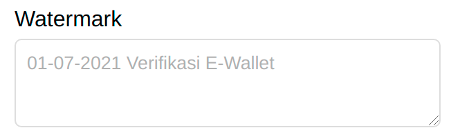
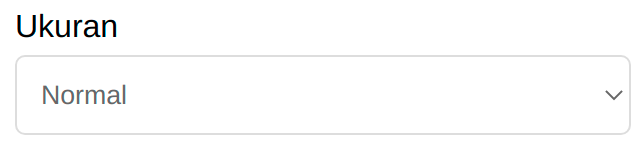
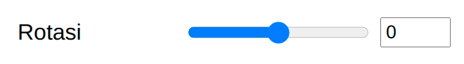
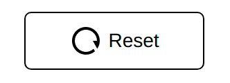

Langkah pertama adalah memilih gambar yang ingin diberi watermark dengan menekan tombol "Tambah Gambar" seperti gambar di bawah ini. Gambar yang ditambahkan tidak akan dikirim keluar dari perangkat yang Anda gunakan.
Setelah itu, ketikkan teks watermark yang diinginkan di kotak teks. Misalnya, "2-2-2021 Verifikasi Pinjaman Online".
Anda bisa memilih jenis teks yang diinginkan dengan memilihnya pada kotak "Font" seperti gambar di bawah ini.
Pilih posisi watermark melalui kotak "Posisi Teks" seperti di bawah ini. Anda juga bisa menentukan posisinya dengan langsung menekan teks pada kotak gambar di samping kanan lalu menariknya ke tempat yang diinginkan.
Anda juga bisa memilih ukuran watermark. Pilih salah satu opsi pada kotak "Ukuran Font".
Setelah itu, pilih warna watermark yang diinginkan pada kotak opsi "Warna Teks".
Atur rotasi watermark dengan menggeser-geser pada kotak opsi "Rotasi Teks".
Anda bisa mengatur opasitas Watermark dengan menggeser-geser pada kotak opsi "Opacity Teks".
Jika ingin mengatur ulang watermark yang telah dimasukkan, gunakan tombol "Reset".
Setelah watermark pada scan KTP sesuai dengan yang diinginkan, tekan tombol "Download" untuk menyimpannya di perangkat Anda.
Scan KTP Anda sudah diberi watermark üéâ
Baca halaman privasi untuk penjelasan tentang data yang diunggah ke Watermark KTP.